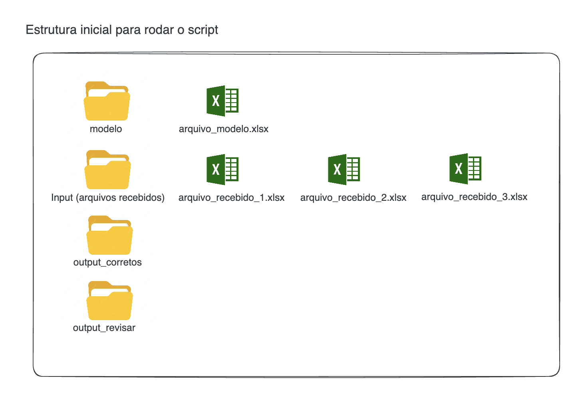

Home
Descrição
O Excel Structure Validator é um projeto Python destinado a validar a estrutura de arquivos Excel. Ele compara arquivos Excel recebidos com um modelo pré-definido para assegurar que os dados cumpram com os padrões estabelecidos.
Fluxo
flowchart LR
A[Folder: Input]-->|Compara Schema| B(Folder: Modelo)
B --> C{Validator}
C -->|Arquivo correto| D[Folder: Output Correto]
C -->|Log com detalhes| D[Folder: Output Correto]
C -->|Arquivo incorreto| E[Folder: Output Incorreto]
C -->|Log com detalhes| E[Folder: Output Incorreto] Aplicação
O projeto é ideal para cenários onde a qualidade e a consistência dos dados são críticas para análises subsequentes, como importações para o Power BI, análises de dados, entre outros.
Antes de iniciar avalie os arquivos em excel dentro da pasta data/input e data/modelo para entender o comportamento do projeto. Para facilitar, criei arquivos simples com 4 até 6 colunas e poucas linhas, porém o conceito se aplica a qualquer modelo e/ou quantidade de colunas/linhas.
Antes de rodar o script

Depois de rodar o script e com o resultado da auditoria

Validações
São 6 validações que o nosso projeto está configurado
Verifica se as colunas do modelo estão na mesma ordem em relação ao arquivo recebido.
Source code in app/validacoes/colunas_estao_presentes_na_mesma_ordem.py
8 9 10 11 12 13 14 15 16 17 | |
Verifica se todas as colunas do modelo estão presentes no arquivo recebido.
Source code in app/validacoes/colunas_estao_presentes.py
8 9 10 11 12 13 14 15 16 17 | |
Verifica se o arquivo recebido tem colunas a mais em relação ao modelo.
Source code in app/validacoes/existem_colunas_a_mais.py
8 9 10 11 12 13 14 15 | |
Verifica se o arquivo recebido tem colunas a menos em relação ao modelo.
Source code in app/validacoes/existem_colunas_a_menos.py
8 9 10 11 12 13 14 15 | |
Verifica se o arquivo recebido tem o mesmo número de linhas em relação ao modelo.
Source code in app/validacoes/quantidade_de_linhas.py
8 9 10 11 12 13 14 15 16 | |
Verifica se o arquivo recebido tem os mesmos datatype em relação ao modelo.
Source code in app/validacoes/tipos_dados.py
8 9 10 11 12 13 14 15 16 17 18 19 20 21 22 | |
Caso qualquer validação seja identificada como invalido, ele marca o arquivo como invalido.
Tabela modelo
O arquivo modelo é o arquivo Excel que deve seguir como template. Ele contém a estrutura que os arquivos Excel recebidos devem seguir. Ele deve ser colocado no diretório data/modelo/.
| Coluna A type: Int | Coluna B type: Int | Coluna C type: Int | Coluna D type: Int | Coluna E type: Int |
|---|---|---|---|---|
| 44 | 47 | 64 | 67 | 67 |
| 9 | 83 | 21 | 36 | 87 |
| 70 | 88 | 88 | 12 | 58 |
| 65 | 39 | 87 | 46 | 88 |
| 81 | 37 | 25 | 77 | 72 |
| 9 | 20 | 80 | 69 | 79 |
| 47 | 64 | 82 | 99 | 88 |
| 49 | 29 | 19 | 19 | 14 |
| 39 | 32 | 65 | 9 | 57 |
| 32 | 31 | 74 | 23 | 35 |
Folder input
No folder input você encontra 5 arquivos, cada um deles com uma divergencia do Modelo
Arquivo 1
O arquivo 1 é um arquivo Excel que contém a estrutura correta.
| Coluna A type: Int | Coluna B type: Int | Coluna C type: Int | Coluna D type: Int | Coluna E type: Int |
|---|---|---|---|---|
| 75 | 55 | 28 | 34 | 0 |
| 0 | 36 | 53 | 5 | 38 |
| 17 | 79 | 4 | 42 | 58 |
| 31 | 1 | 65 | 41 | 57 |
| 35 | 11 | 46 | 82 | 91 |
| 0 | 14 | 99 | 53 | 12 |
| 42 | 84 | 75 | 68 | 6 |
| 68 | 47 | 3 | 76 | 52 |
| 78 | 15 | 20 | 99 | 58 |
| 23 | 79 | 13 | 85 | 48 |
Arquivo 2
O arquivo 2 é um arquivo Excel que contém a estrutura incorreta, apresenta uma coluna a menos.
| Coluna A type: Int | Coluna B type: Int | Coluna C type: Int | Coluna D type: Int |
|---|---|---|---|
| 49 | 69 | 41 | 35 |
| 64 | 95 | 69 | 94 |
| 0 | 50 | 36 | 34 |
| 48 | 93 | 3 | 98 |
| 42 | 77 | 21 | 73 |
| 0 | 10 | 43 | 58 |
| 23 | 59 | 2 | 98 |
| 62 | 35 | 94 | 67 |
| 82 | 46 | 99 | 20 |
| 81 | 50 | 27 | 14 |
Arquivo 3
O arquivo 3 é um arquivo Excel que contém a estrutura incorreta, apresenta uma coluna a mais, coluna f.
| Coluna A type: Int | Coluna B type: Int | Coluna C type: Int | Coluna D type: Int | Coluna E type: Int | Coluna F type: Int |
|---|---|---|---|---|---|
| 41 | 58 | 65 | 36 | 10 | 86 |
| 43 | 11 | 2 | 51 | 80 | 32 |
| 54 | 0 | 38 | 19 | 46 | 42 |
| 56 | 60 | 77 | 30 | 24 | 2 |
| 3 | 94 | 98 | 13 | 40 | 72 |
| 19 | 95 | 72 | 26 | 66 | 52 |
| 67 | 61 | 14 | 96 | 4 | 67 |
| 11 | 86 | 77 | 75 | 56 | 16 |
| 24 | 29 | 21 | 25 | 80 | 60 |
| 61 | 83 | 33 | 32 | 70 | 85 |
Arquivo 4
O arquivo 4 é um arquivo Excel que contém a estrutura incorreta, a ordem das colunas está diferente.
| Coluna A type: Int | Coluna B type: Int | Coluna C type: Int | Coluna E type: Int | Coluna D type: Int |
|---|---|---|---|---|
| 31 | 13 | 71 | 56 | 24 |
| 79 | 41 | 18 | 40 | 54 |
| 79 | 11 | 38 | 93 | 1 |
| 95 | 44 | 88 | 24 | 67 |
| 82 | 3 | 76 | 35 | 86 |
| 61 | 69 | 87 | 43 | 32 |
| 11 | 84 | 10 | 54 | 37 |
| 28 | 2 | 27 | 83 | 89 |
| 23 | 53 | 51 | 46 | 20 |
| 53 | 29 | 67 | 35 | 39 |
Arquivo 5
O arquivo 5 é um arquivo Excel que contém a estrutura incorreta, o número de linhas está diferente. A linha 12 foi adicionada.
| Coluna A type: Int | Coluna B type: Int | Coluna C type: Int | Coluna D type: Int | Coluna E type: Int |
|---|---|---|---|---|
| 9 | 73 | 41 | 23 | 3 |
| 46 | 90 | 50 | 3 | 31 |
| 9 | 10 | 27 | 45 | 71 |
| 39 | 61 | 85 | 97 | 44 |
| 34 | 34 | 88 | 33 | 5 |
| 36 | 0 | 75 | 34 | 69 |
| 53 | 80 | 62 | 8 | 61 |
| 1 | 81 | 35 | 91 | 40 |
| 36 | 48 | 25 | 67 | 35 |
| 66 | 43 | 24 | 4 | 12 |
| 30 | 29 | 33 | 18 | 17 |